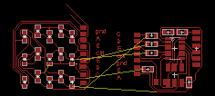

Final Project | Assignments | Download | About | Contact
On wednesday 04.08.2015 we’ve got the eleventh online lesson with Neil Gershenfeld.
The next lessons can be found on the Fab Academy account on Vimeo.
For this week the assignment was
** add an output device to a microcontroller board you’ve designed and program it to do something **
For this assignment I’ve made a 5x3 ledmatrix with a charlieplexing method.
To drive 15 led I’ve to use 5 pins: Here the pinmask
led0 led1 led2 led3 led4
pinA: OUT, Vcc pinA: OUT, Gnd pinA: OUT, Vcc pinA: OUT, Gnd pinA: OUT, Vcc
pinB: OUT, Gnd pinB: OUT, Vcc pinB: IN pinB: IN pinB: IN
pinC: IN pinC: IN pinC: OUT, Gnd pinC: OUT, Vcc pinC: IN
pinD: IN pinD: IN pinD: IN pinD: IN pinD: OUT, Gnd
pinE: IN pinE: IN pinE: IN pinE: IN pinE: IN
led5 led6 led7 led8 led9
pinA: OUT, Gnd pinA: OUT, Vcc pinA: OUT, Gnd pinA: IN pinA: IN
pinB: IN pinB: IN pinB: IN pinB: OUT, Vcc pinB: OUT, Gnd
pinC: IN pinC: IN pinC: IN pinC: OUT, Gnd pinC: OUT, Vcc
pinD: OUT, Vcc pinD: IN pinD: IN pinD: IN pinD: IN
pinE: IN pinE: OUT, Gnd pinE: OUT, Vcc pinE: IN pinE: IN
led10 led11 led12 led13 led14
pinA: IN pinA: IT pinA: IN pinA: IN pinA: IN
pinB: OUT, Vcc pinB: OUT, Gnd pinB: OUT, Vcc pinB: OUT, Gnd pinB: IN
pinC: IN pinC: IN pinC: IN pinC: IN pinC: OUT, Vcc
pinD: OUT, Gnd pinD: OUT, Vcc pinD: IN pinD: IN pinD: IN
pinE: IN pinE: IN pinE: OUT, Gnd pinE: OUT, Vcc pinE: OUT, Gnd
I designed the board with Eagle, but the routing was not straightforward, so the board looks a little bit a mess, but it works. I’d like to shrink the matrix board but in the upper right corner traces are too closer, so I’ll try for a different routing in the future to shrink it.

I made this with two boards because at the very begin I tried to make it wearable without any other part, that’s also the reason why I made two cut on the boards.
Pay attention at the directions of the LEDs and the correspondence between traces to connect the two boards.
As you can see there is also a drawing on the board; it should be some sort of button that close the loop using skin conductivity, but I’ve not implemented it in software. I’ve added it graphically, after exporting the board.
Starting from the Neil code I made some customization.
First of all I’ve changed the pins for the pinout because I’ve used different pins.
Than ports and directions registers have been edited too.
Here the code to cicle and test all the leds.
#include <avr/io.h>
#include <util/delay.h>
#define output(directions,pin) (directions |= pin) // set port direction for output
#define input(directions,pin) (directions &= (~pin)) // set port direction for input
#define set(port,pin) (port |= pin) // set port pin
#define clear(port,pin) (port &= (~pin)) // clear port pin
#define pin_test(pins,pin) (pins & pin) // test for port pin
#define bit_test(byte,bit) (byte & (1 << bit)) // test for bit set
#define led_delay() _delay_ms(1) // LED delay
//#define led_port PORTA
//#define led_direction DDRA
//David's pinout
#define A 0 // led pin A
#define B 1 // led pin B
#define C 2 // led pin C
#define D 3 // led pin D
#define E 4 // led pin E
#define BUTTON (1 << PB7) // button pin
uint8_t ledPin(uint8_t ledNumber){
if (ledNumber == A){
return (1<< PA2);
}
if (ledNumber == B){ return (1<< PA3);
}
if (ledNumber == C){ return (1<< PB0);
}
if (ledNumber == D){ return (1<< PB1);
}
if (ledNumber == E){ return (1<< PB2);
}
}
volatile uint8_t* ledPort(uint8_t ledNumber){
if (ledNumber == A || ledNumber == B) {
return &PORTA;
} else {
return &PORTB;
}
}
volatile uint8_t* ledDir(uint8_t ledNumber){
if (ledNumber == A || ledNumber == B) {
return &DDRA;
} else {
return &DDRB;
}
}
void flash(uint8_t f, uint8_t t, uint8_t delay) {
//
// source from, sink to, flash
//
uint8_t from = ledPin(f);
uint8_t to = ledPin(t);
static uint8_t i;
//set(ledPort(from),from);
//clear(ledPort(to),to);
*ledPort(from) |= from;
*ledPort(to) &= (~to);
*ledDir(from) |= from;
*ledDir(to) |= to;
for (i = 0; i < delay; ++i){
led_delay();
*ledDir(from) &= (~from) ;
*ledDir(to) &= (~to) ;
}
}
void led_cycle(uint8_t number, uint8_t delay) {
//
// cycle through LEDs
//
uint8_t i;
for (i = 0; i < number; ++i) {
flash(B,A,delay);
flash(C,A,delay);
flash(D,A,delay);
flash(E,A,delay);
flash(A,B,delay);
flash(C,B,delay);
flash(D,B,delay);
flash(E,B,delay);
flash(A,C,delay);
flash(B,C,delay);
flash(D,C,delay);
flash(E,C,delay);
flash(A,D,delay);
flash(B,D,delay);
flash(C,D,delay);
flash(E,D,delay);
flash(A,E,delay);
flash(B,E,delay);
flash(C,E,delay);
flash(D,E,delay);
}
}
int main(void) {
//
// set clock divider to /1
//
CLKPR = (1 << CLKPCE);
CLKPR = (0 << CLKPS3) | (0 << CLKPS2) | (0 << CLKPS1) | (0 << CLKPS0);
//
// main loop
//
while (1) {
led_cycle(1,100);
led_cycle(3,20);
led_cycle(100,1); } return 0; }
It presents a weird behaviour: after cycling the first 14 leds it should flash led 14, but it doesn’t; instead it flash the led3, led 6, led9 and led12 at low power
led3
from C
to A
led6
from A
to E
led9
from C
to B
led12
from B
to C
I tried also to verify the direction of the led14, but it’s ok. Right now I can’t explain this wire pattern.
It has been solved during the final project debugging.
The leds were arranged indexed not properly (just the last two) and so the micro sets to ground all the other 4 pins, to the tension was divided between leds. Fixing the array coordinates it works properly.